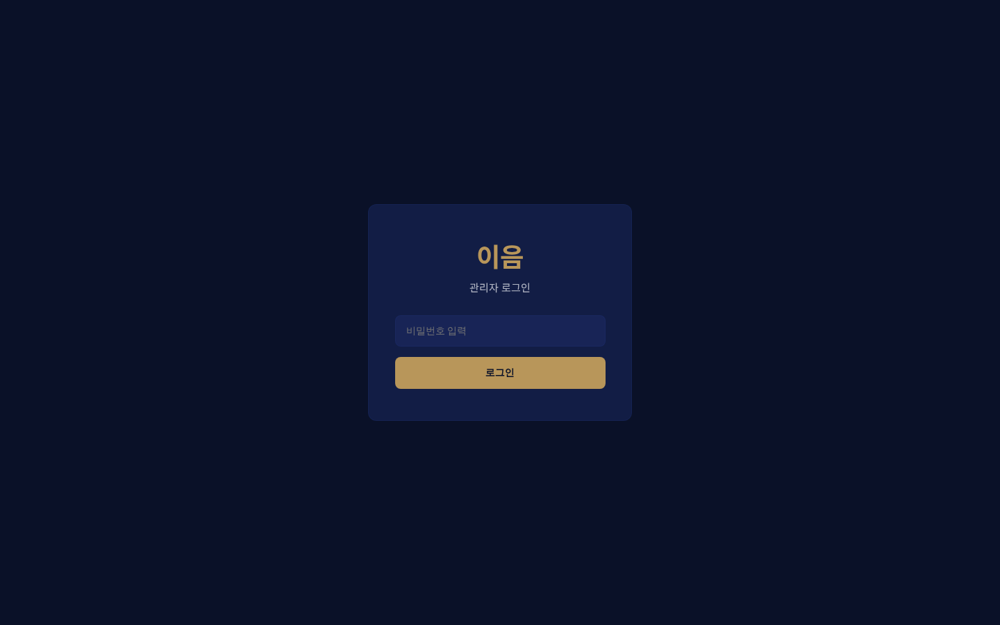
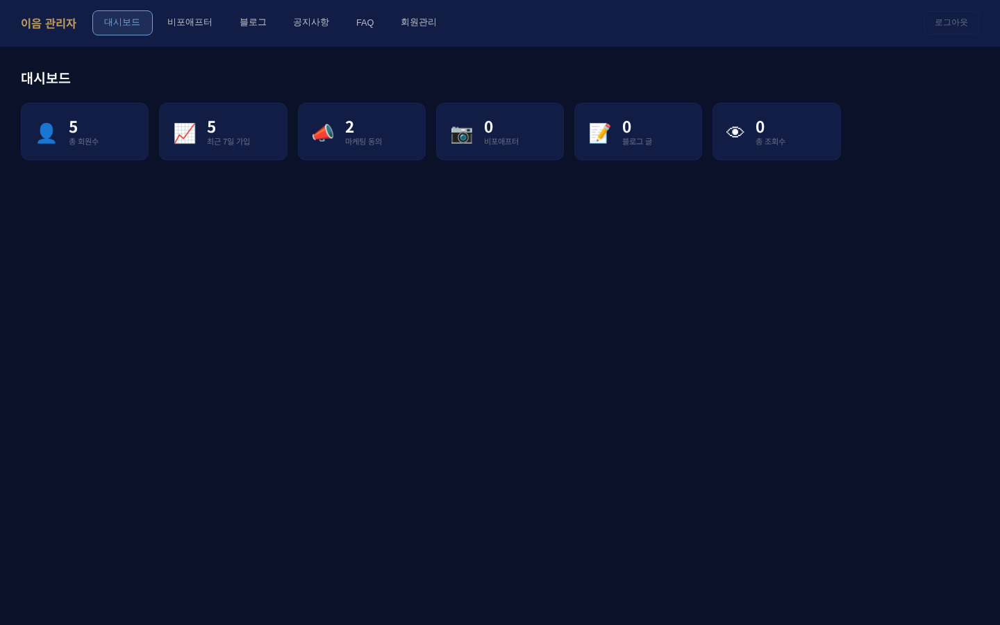
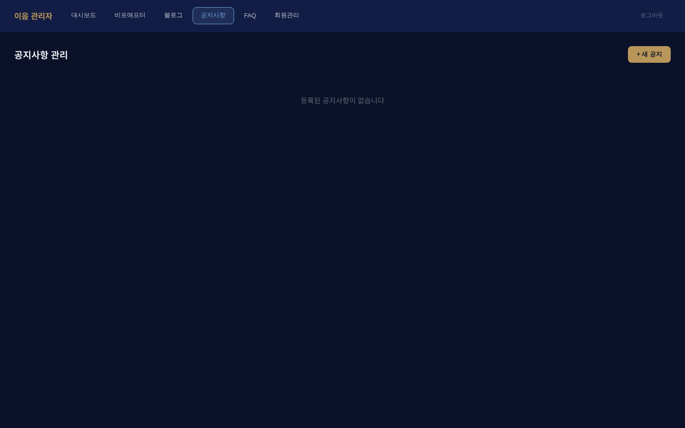
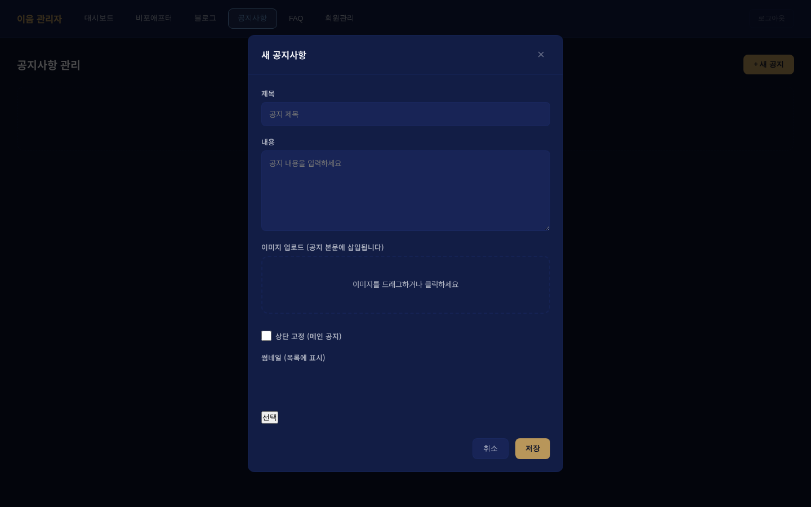
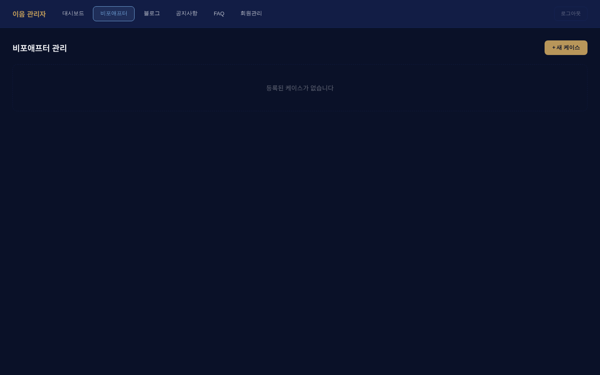
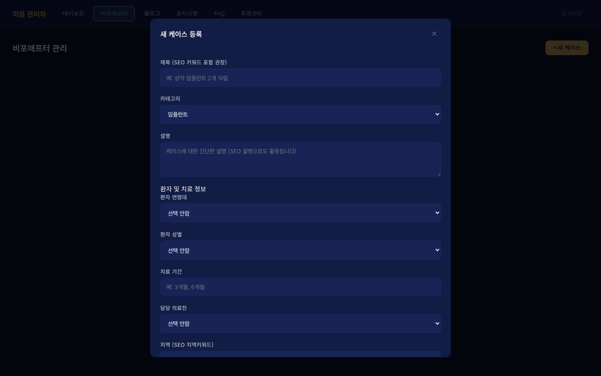
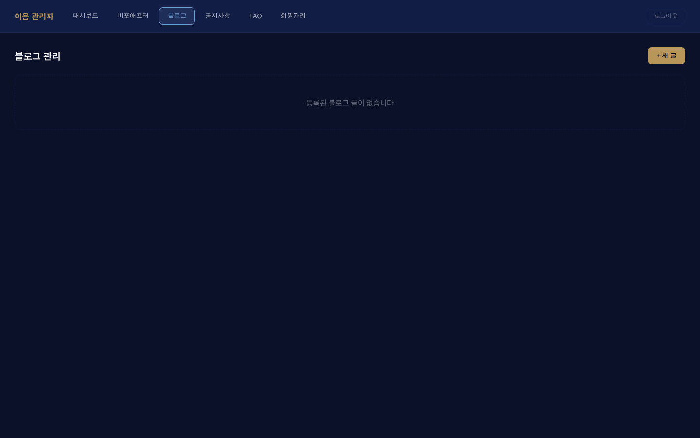
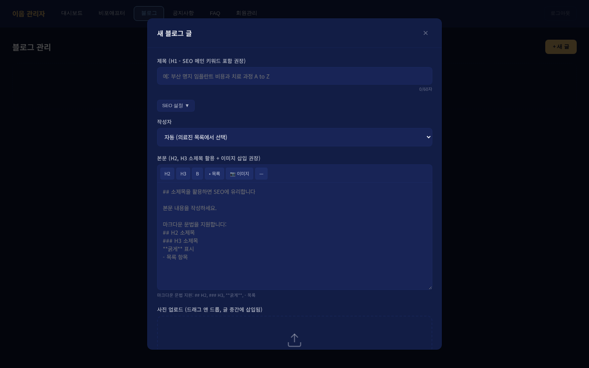
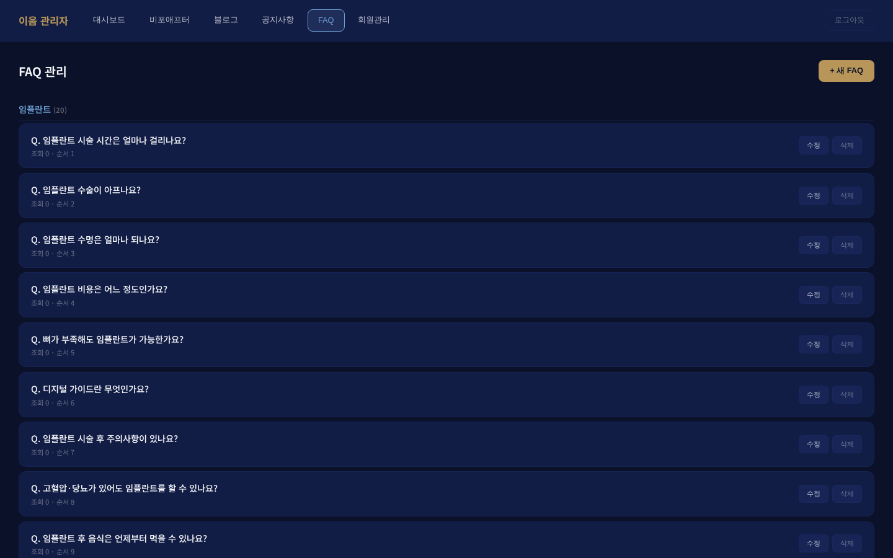

EUM DENTAL CLINIC · 이음치과의원
웹사이트 관리자
사용설명서
공지사항 · 비포애프터 · 블로그 작성 가이드
목차
TABLE OF CONTENTS
01접속 정보 · 기본 규칙p.3
02관리자 로그인 방법p.4
03대시보드 살펴보기p.5
04공지사항 작성 · 수정 · 삭제p.6
05비포애프터 등록 (의료법 주의)p.8
06블로그 포스팅 · 에디터 사용법p.11
07마크다운 문법 치트시트p.14
08이미지 업로드 · 썸네일 설정p.15
09FAQ · 회원관리 (참고)p.16
10자주 묻는 질문 (운영 FAQ)p.17
11트러블슈팅p.18
📘 이 설명서는
이음치과의원 공식 웹사이트(ieumdc.kr)의 관리자 페이지에서 공지사항·비포애프터·블로그를
직접 작성·관리하실 수 있도록 제작되었습니다. 한 번만 익혀두시면, 마케팅 대행사 없이도
원장님께서 직접 콘텐츠를 운영하실 수 있습니다.
01. 접속 정보 · 기본 규칙
ACCESS & BASIC RULES
🌐 주요 URL
| 구분 | 주소 | 용도 |
|---|
| 메인 홈페이지 | https://ieumdc.kr | 환자가 보는 공개 사이트 |
| 관리자 로그인 | https://ieumdc.kr/admin | 콘텐츠 작성 페이지 |
| 공지사항 목록 | https://ieumdc.kr/notices | 공개 공지 확인 |
| 비포애프터 목록 | https://ieumdc.kr/cases | 공개 케이스 확인 |
| 블로그 목록 | https://ieumdc.kr/blogs | 공개 블로그 확인 |
| Sitemap (검색엔진용) | https://ieumdc.kr/sitemap.xml | 구글/네이버 자동수집 |
🔑 관리자 접속 정보
| 항목 | 값 |
|---|
| 관리자 비밀번호 | eum2025! (느낌표 포함, 대소문자 주의) |
| 세션 유지 기간 | 7일 (자동 로그아웃) |
| 권장 브라우저 | Chrome, Edge, Safari 최신 버전 |
⚠️ 보안 주의
• 비밀번호는 타인과 절대 공유하지 마세요.
• 관리자 계정이 노출되면 홈페이지가 변조될 수 있습니다.
• 공용 PC에서 접속 후에는 반드시 우측 상단 로그아웃을 눌러주세요.
• 비밀번호 변경이 필요하면 개발자에게 요청해주세요.
📋 작성 원칙 (필수)
- 공지사항 → 사실 중심, 날짜·시간 명확히 기재
- 비포애프터 → 환자 동의서 받은 케이스만 등록 (의료법 준수)
- 블로그 → SEO 키워드 포함, H2·H3 소제목 활용
- 개인정보(실명·전화번호·주소) 절대 노출 금지
- 타 병원 비방·과장 광고성 표현 금지
02. 관리자 로그인 방법
HOW TO LOGIN
-
브라우저에서
https://ieumdc.kr/admin 접속
검색창이 아닌 주소창에 직접 입력하세요. 북마크(즐겨찾기) 등록을 추천합니다.
-
비밀번호 입력
eum2025! 를 입력하고 로그인 버튼 클릭.
-
대시보드 화면 진입
로그인 성공 시 상단에 대시보드 / 비포애프터 / 블로그 / 공지사항 / FAQ / 회원관리
6개 탭이 나타납니다.

▲ 관리자 로그인 화면
🔐 비밀번호를 잊어버리셨다면?
자체적으로 복구할 수 없습니다. 개발자에게 연락하시면 비밀번호를 재설정해드립니다.
로그아웃 방법
작업이 끝나면 반드시 우측 상단 로그아웃 버튼을 눌러 세션을 종료하세요.
세션은 7일간 자동 유지되므로 공용 PC에서는 꼭 수동 로그아웃이 필요합니다.
03. 대시보드 살펴보기
DASHBOARD OVERVIEW
로그인 직후 가장 먼저 보이는 화면입니다. 웹사이트 운영 현황을 한눈에 파악할 수 있습니다.

▲ 대시보드 – 주요 지표 6개 카드
📊 대시보드 카드 설명
| 카드명 | 의미 |
|---|
| 총 회원수 | 비포애프터 열람을 위해 가입한 환자 회원 수 |
| 최근 7일 가입 | 일주일 내 신규 가입자 (마케팅 지표) |
| 마케팅 동의 | 카톡/문자 마케팅 수신 동의 회원 수 |
| 비포애프터 | 등록된 케이스 총 개수 |
| 블로그 글 | 발행된 블로그 포스트 개수 |
| 총 조회수 | 모든 페이지 누적 조회수 |
🧭 상단 탭 메뉴 구조
| 탭 | 역할 | 중요도 |
|---|
| 대시보드 | 운영 현황 지표 | 참고용 |
| 비포애프터 | 치료 전/후 사례 등록·관리 | 자주사용 |
| 블로그 | 치과 상식·진료 이야기 연재 | 자주사용 |
| 공지사항 | 휴진·이벤트·병원 소식 | 자주사용 |
| FAQ | 자주 묻는 질문 관리 | 가끔 |
| 회원관리 | 가입한 환자 목록 조회 | 가끔 |
💡 Tip — 가장 많이 쓰게 될 메뉴는 공지사항 → 블로그 → 비포애프터
순입니다. 공지는 주 1회, 블로그는 월 2~4회, 비포애프터는 동의서 받은 케이스가 생길 때마다 업데이트하시면 충분합니다.
04. 공지사항 작성하기
NOTICES · 가장 쉬운 콘텐츠부터 시작
공지사항은 가장 쉽고 빠르게 작성할 수 있는 콘텐츠입니다.
휴진 안내, 진료시간 변경, 이벤트, 병원 소식 등에 활용하세요.

▲ 공지사항 관리 화면 (빈 상태)
📝 새 공지 작성 4단계
- 상단 공지사항 탭 클릭
- 우측 + 새 공지 버튼 클릭
- 제목과 내용 입력 + 필요시 이미지 첨부
- 하단 저장 버튼 → 즉시 공개

▲ 공지사항 작성 폼
📋 입력 항목 상세
제목 — 눈에 잘 띄게. 예) "5월 어린이날 연휴 진료 안내"
내용 — 줄바꿈을 하면 자동으로 단락이 나뉩니다. 날짜·시간·장소를 명확히 써주세요.
이미지 업로드 — 포스터·안내 이미지를 드래그하거나 클릭해서 첨부. 본문에 자동 삽입됩니다.
상단 고정 (메인 공지) — 체크하면 홈페이지 메인에 배지로 표시되며 공지 목록 상단에 📌 고정됩니다. 중요한 공지 1~2개만 체크 권장.
썸네일 — 목록 화면에 작게 표시될 대표 이미지 (선택사항).
04. 공지사항 작성하기 (계속)
✏️ 수정하기
- 공지사항 탭에서 수정할 공지 클릭
- 제목·내용·이미지 변경 후 저장
- 수정 즉시 홈페이지에 반영됩니다
🗑 삭제하기
- 공지 목록에서 삭제할 항목 옆 삭제 버튼 클릭
- 확인 팝업에서 확인 클릭
- 즉시 홈페이지에서 사라집니다 (복구 불가)
⚠️ 삭제 주의 — 삭제된 공지는 복구할 수 없습니다.
중요한 내용이라면 일단 "상단 고정" 해제만 하시고, 시간이 지난 후 삭제하세요.
📌 공지 작성 예시 (복사해서 사용하세요)
예시 1 — 휴진 안내
제목: 5월 연휴 진료 일정 안내
내용:
안녕하세요, 이음치과의원입니다.
2026년 5월 어린이날 연휴 진료 일정 안내드립니다.
▪ 5월 3일(금) - 휴진 (정기 휴무)
▪ 5월 4일(토) - 정상 진료 (09:00 ~ 17:00)
▪ 5월 5일(일) - 정상 진료 (09:00 ~ 17:00)
▪ 5월 6일(월) - 대체공휴일 휴진
예약 문의: 051-206-5888
네이버 예약도 가능합니다.
예시 2 — 이벤트 안내
제목: 신환 검진 이벤트 (4월 한정)
내용:
이음치과의원 첫 방문 환자분께 드리는 감사의 혜택입니다.
▪ 기본 구강검진 무료
▪ 파노라마 X-ray 촬영 무료
▪ 1:1 상담 시간 충분히 제공
예약: 051-206-5888 / 카카오톡 채널
기간: 2026년 4월 30일까지
💡 좋은 공지의 조건
① 날짜·시간·요일을 정확히 명시 ② 예약 연락처 포함 ③ 불필요한 수식어 제거 ④ 제목에 키워드 포함
05. 비포애프터 등록하기
BEFORE & AFTER · 의료법 준수 필수
⚠️ 의료법 준수 (반드시 읽어주세요)
비포애프터는 의료법상 가장 민감한 콘텐츠입니다. 아래 사항을 반드시 확인하세요.
① 환자 서면 동의서를 받은 케이스만 업로드 ② 개인 식별 정보(얼굴·이름·생년월일) 비식별 처리
③ "100%", "완벽한", "최고" 등 과장 표현 금지 ④ AFTER 사진은 회원가입 로그인 후에만 공개되도록 자동 처리됨

▲ 비포애프터 관리 화면 (빈 상태)
📝 새 케이스 등록 순서
- 상단 비포애프터 탭 클릭
- 우측 + 새 케이스 버튼 클릭
- 폼 입력 (다음 페이지 참고)
- 이미지 업로드 (BEFORE / AFTER / 파노라마)
- 하단 저장

▲ 새 케이스 등록 폼
05. 비포애프터 등록하기 (계속)
📋 입력 항목 상세
| 항목 | 설명 | 필수 |
|---|
| 제목 | SEO 키워드 포함. 예) "상악 임플란트 2개 식립" | ✅ |
| 카테고리 | 임플란트 / 심미보철 / 심미 레진 / 턱관절 / 일반진료 | ✅ |
| 설명 | 케이스 소개문. 검색 결과 스니펫에 표시됨 (2~3줄 권장) | ✅ |
| 환자 연령대 | 20대/30대/40대/50대/60대 이상 (익명성 유지) | 권장 |
| 환자 성별 | 남/여 (선택) | 권장 |
| 치료 기간 | 예) "3개월", "6주" | 권장 |
| 담당 의료진 | 목록에서 선택 | 권장 |
| 지역 | 예) "부산 강서구" (SEO 지역 키워드용) | 권장 |
| 환자 이니셜 | 예) "J.S" (얼굴 사진 대신 표기) | 권장 |
| 환자 동의 | 체크박스 반드시 체크 | ✅ |
🖼 이미지 업로드 4종류
- 파노라마 BEFORE — 치료 전 전체 치아 X-ray
- 파노라마 AFTER — 치료 후 전체 치아 X-ray
- 구강내 BEFORE — 치료 전 구강 사진 (얼굴 불필요)
- 구강내 AFTER — 치료 후 구강 사진
📸 이미지 가이드
• 해상도: 최소 1000px 이상 권장
• 용량: 장당 5MB 이하
• 파일명: 환자 식별 정보 제거 (예: IMG_001.jpg 형식)
• 얼굴·눈·입 전체가 보이는 사진 금지 (구강 부위만)
• EXIF 메타데이터 제거 권장 (스마트폰 촬영 시 위치 정보 포함 가능)
🔐 AFTER 사진 보호 장치 (자동)
홈페이지에서 AFTER 사진은 회원가입 후 로그인한 방문자에게만 공개됩니다.
의료법상 치료 전후 비교 이미지는 무분별한 노출이 제한되므로, 이 장치가 자동으로 작동합니다.
원장님께서 별도로 설정하실 필요가 없습니다.
🗑 수정 · 삭제
목록에서 케이스 클릭 → 내용 수정 후 저장 / 또는 삭제 버튼.
환자 동의가 철회된 경우 즉시 삭제하세요.
05. 비포애프터 등록하기 (작성 예시)
✏️ 작성 예시 — 임플란트
제목: 상악 구치부 임플란트 2개 식립
카테고리: 임플란트
설명: 10년 이상 결손되었던 상악 어금니 부위에 디지털 가이드 임플란트 2개를 정밀 식립한 케이스입니다. CBCT 기반 수술 계획으로 신경·혈관 손상 없이 안전하게 진행되었습니다.
환자 연령대: 50대
환자 성별: 여
치료 기간: 4개월
담당 의료진: 최효영 원장
지역: 부산 강서구 명지동
환자 이니셜: L.Y
환자 동의: ☑ 체크
📐 카테고리별 권장 제목 템플릿
| 카테고리 | 제목 템플릿 |
|---|
| 임플란트 | [부위] 임플란트 [개수]개 식립 / [부위] 임플란트 + 뼈이식 |
| 심미보철 | [부위] 라미네이트 [개수]개 / 올세라믹 크라운 [위치] |
| 심미 레진 | 앞니 변색 심미 레진 / 치아 사이 공간 심미 레진 |
| 턱관절 | 턱관절 장애 스플린트 치료 / 악관절 보톡스 치료 |
| 일반진료 | [부위] 충치 신경치료 + 크라운 / 사랑니 [개수]개 발치 |
💡 SEO 최적화 Tip
제목에 부위 + 치료명 + 특징 3요소를 포함하면 검색 노출에 유리합니다.
예: "상악 전치부 라미네이트 6개 심미 치료" (부위=상악 전치부, 치료명=라미네이트, 특징=6개 심미)
06. 블로그 포스팅하기
BLOG · 장기적 SEO 자산을 쌓는 가장 강력한 수단
블로그는 검색엔진 상위 노출의 핵심입니다. 꾸준히 쌓이면 광고비 없이도
환자들이 검색을 통해 찾아오는 병원을 만들 수 있습니다.

▲ 블로그 관리 화면
📝 새 블로그 글 작성 순서
- 상단 블로그 탭 클릭
- 우측 + 새 글 버튼 클릭
- 제목 → 본문 → 이미지 순서로 입력
- 작성자 선택 (자동 또는 의료진 선택)
- 저장 → 즉시 발행

▲ 블로그 작성 폼 (마크다운 에디터 탑재)
06. 블로그 포스팅하기 (입력 항목)
📋 입력 항목 상세
| 항목 | 설명 |
|---|
| 제목 (H1) | SEO 메인 키워드 포함 필수. 60자 이내 권장.
예) "부산 명지 임플란트 비용과 치료 과정 A to Z" |
| SEO 설정 | ▼ 펼치면 별도 검색 제목·검색 설명·URL 슬러그를 설정할 수 있음
• meta_title: 검색 결과에 뜨는 제목 (없으면 H1 사용)
• meta_description: 검색 결과 요약 (155자 이내)
• slug: URL 주소에 들어가는 영문 (예: busan-implant-guide) |
| 작성자 | 자동 선택 or 의료진 명단에서 수동 선택 |
| 본문 | 마크다운 에디터 사용. H2, H3 소제목·이미지·목록 활용 권장 |
| 사진 업로드 | 드래그&드롭 또는 클릭. 업로드한 이미지는 본문 커서 위치에 자동 삽입 |
🎯 본문 에디터 툴바
본문 입력창 상단에 아래 버튼들이 있습니다. 클릭하면 해당 마크다운 문법이 자동으로 삽입됩니다.
| 버튼 | 기능 | 삽입되는 문법 |
|---|
| H2 | 대제목 | ## 소제목 |
| H3 | 중제목 | ### 소소제목 |
| B | 굵은 글씨 | **강조 텍스트** |
| • 목록 | 불릿 리스트 | - 항목 |
| 🖼 이미지 | 이미지 업로드 | 파일 선택 → 자동 삽입 |
| — | 구분선 | --- |
✍️ 좋은 블로그 글의 3요소
- 검색 의도에 맞는 제목 — 환자가 검색창에 칠 법한 문장으로 (예: "임플란트 수술 후 관리법")
- 소제목(H2/H3)으로 구조화 — 글을 쭉 읽지 않아도 한눈에 파악되게
- 실제 경험·데이터 포함 — "저희 병원에서는 OOO 이렇게 합니다" 같은 구체적 표현
💡 SEO Golden Rule — 제목·본문 첫 문단·H2 소제목에 핵심 키워드를 자연스럽게 3회 이상
포함하세요. 키워드 예: "부산 임플란트", "명지 치과", "라미네이트 가격", "사랑니 발치" 등.
06. 블로그 포스팅하기 (작성 예시)
📖 완성 예시 — 실제로 복사해 쓸 수 있는 샘플
제목: 부산 명지 임플란트 수술 전 꼭 알아야 할 5가지
본문:
안녕하세요, 부산 강서구 명지동 이음치과의원입니다.
임플란트 수술을 앞두고 계신 분들께 꼭 알려드리고 싶은 5가지를 정리했습니다.
## 1. 뼈의 양과 질이 충분한가?
임플란트는 잇몸뼈에 식립하기 때문에, **뼈의 양이 부족하면 뼈이식이 필요**합니다.
이음치과에서는 CBCT 3D 촬영으로 뼈의 상태를 정밀 진단합니다.
### 뼈이식이 필요한 경우
- 발치 후 오래 방치된 경우
- 치주염으로 뼈가 흡수된 경우
- 선천적으로 뼈가 얇은 경우
## 2. 전신 건강 상태 체크
**당뇨, 고혈압, 골다공증** 등 전신질환이 있으면 수술 전 반드시 알려주셔야 합니다.
조절되지 않은 당뇨는 임플란트 실패율을 3배 이상 높입니다.
## 3. 디지털 가이드 시스템 사용 여부
요즘은 **디지털 가이드 임플란트**가 표준입니다. 미리 컴퓨터로 수술을 시뮬레이션하고,
맞춤 가이드를 제작해 정확한 위치·각도·깊이로 식립하는 방식입니다.
---
## 이음치과의 임플란트 시스템
- CBCT 기반 3D 진단
- 디지털 가이드 수술
- 미국 3M 임플란트 사용
- 10년 품질보증
상담 문의: **051-206-5888**
네이버 예약: 이음치과 검색
📊 블로그 주제 추천 리스트
- 임플란트 비용 & 보험 적용 기준
- 사랑니 발치 시기와 주의사항
- 라미네이트 vs 올세라믹 차이
- 스케일링 주기와 효과
- 어린이 치아 관리 (돌 전부터)
- 턱관절 장애 자가 진단법
- 치주염 단계별 치료법
- 임플란트 후 관리 & 수명
07. 마크다운 문법 치트시트
MARKDOWN CHEATSHEET · 블로그·공지 본문에 활용
이음치과 블로그 에디터는 마크다운(Markdown)이라는 간단한 문법을 지원합니다.
툴바 버튼을 쓰지 않고도 직접 타이핑으로 서식을 만들 수 있습니다.
📝 기본 문법
| 입력 | 결과 | 용도 |
|---|
# 제목1 | 제목1 | 대제목 (블로그 제목은 자동 H1) |
## 제목2 | 제목2 | 소제목 (SEO 중요!) |
### 제목3 | 제목3 | 소소제목 |
**굵게** | 굵게 | 강조하고 싶은 단어 |
*기울임* | 기울임 | 인용·외국어 표시 |
- 항목1
- 항목2 | • 항목1
• 항목2 | 불릿 리스트 |
1. 항목1
2. 항목2 | 1. 항목1
2. 항목2 | 번호 리스트 |
--- |
| 구분선 |
[네이버](https://naver.com) | 네이버 | 링크 |
 | 🖼 이미지 | 이미지 삽입 (자동 처리됨) |
🎨 실제 사용 예시
입력 (마크다운)
## 임플란트 3단계
임플란트는 크게 **3단계**로 진행됩니다.
1. 식립 수술
2. 뼈와 융합 (3~6개월)
3. 보철물 연결
더 자세한 내용은 [예약 문의](tel:051-206-5888) 부탁드립니다.
출력 (화면에 보이는 모습)
임플란트 3단계
임플란트는 크게
3단계로 진행됩니다.
1. 식립 수술
2. 뼈와 융합 (3~6개월)
3. 보철물 연결
더 자세한 내용은
예약 문의 부탁드립니다.
💡 못 외우셔도 OK — 에디터 상단 툴바 H2 H3
B • 목록 버튼을 클릭하면 문법이 자동으로 삽입됩니다.
마크다운은 참고용으로 생각하세요.
08. 이미지 업로드 & 썸네일
IMAGE UPLOAD GUIDE
📤 업로드 방법 3가지
- 드래그 앤 드롭 — 이미지 파일을 업로드 영역으로 끌어다 놓기 (가장 쉬움)
- 클릭 업로드 — 업로드 영역 클릭 → 파일 탐색기에서 선택
- 툴바 버튼 — 블로그 에디터 상단 🖼 이미지 버튼 클릭
📐 이미지 권장 규격
| 용도 | 권장 크기 | 포맷 | 최대 용량 |
|---|
| 블로그 본문 | 1200×800px | JPG/PNG/WebP | 5MB |
| 썸네일 | 800×600px (4:3) | JPG/WebP | 2MB |
| 비포애프터 | 1000×1000px 이상 | JPG | 5MB |
| 공지 포스터 | 1200×1200px | JPG/PNG | 3MB |
⚙️ 이미지 업로드 자동 처리
이음치과 시스템은 업로드된 이미지를 자동으로 최적화합니다.
- ✅ 용량 자동 압축 (화질 유지)
- ✅ Cloudflare R2 CDN 자동 배포 (전 세계 빠른 로딩)
- ✅ 반응형 크기 자동 조정 (모바일/PC)
- ✅ 이미지 URL 자동 생성 → 본문에 자동 삽입
🖼 썸네일 설정
썸네일은 목록 페이지에서 대표 이미지로 표시되는 작은 이미지입니다.
블로그·공지·비포애프터 모두 썸네일 설정이 가능하며, 미설정 시 기본 이미지가 표시됩니다.
💡 썸네일 꿀팁
• 목록에서 한눈에 파악되는 대표성 있는 이미지를 선택
• 글자(타이포)가 포함된 이미지는 썸네일에 효과적
• 어두운 이미지보다 밝고 선명한 이미지가 클릭률 높음
⚠️ 저작권 주의
인터넷에서 다운받은 이미지는 저작권 문제가 있을 수 있습니다.
병원에서 직접 촬영한 사진이나 구매한 스톡 이미지(Unsplash, Shutterstock 등)만 사용하세요.
타 병원 이미지 복사·도용은 법적 분쟁으로 이어질 수 있습니다.
09. FAQ · 회원관리 (참고)
ADDITIONAL FEATURES
❓ FAQ 관리

▲ FAQ 관리 탭
"자주 묻는 질문" 페이지(/faq)의 항목들을 추가·수정·삭제할 수 있습니다.
이미 112개의 기본 FAQ가 등록되어 있어, 필요시에만 수정하시면 됩니다.
FAQ 작성 시 주의사항
- 질문(Q)은 환자가 실제로 검색할 만한 문장으로
- 답변(A)은 2~3문장으로 간결하게
- 같은 내용이 이미 있는지 먼저 확인
👥 회원관리
비포애프터 AFTER 사진 열람을 위해 가입한 환자 회원 목록을 볼 수 있습니다.
| 표시 정보 | 설명 |
|---|
| 이름·전화번호 | 회원가입 시 입력한 정보 |
| 가입일 | 등록 일자 |
| 마케팅 동의 | 카톡/문자 발송 가능 여부 |
| 최근 접속 | 마지막 로그인 시점 |
🔒 개인정보 보호
회원 정보는 병원 관계자 외 열람 금지입니다. 스크린샷·복사·외부 공유는
개인정보보호법 위반이 될 수 있습니다. 마케팅 목적 활용 시에도
마케팅 동의한 회원에게만 발송하세요.
📈 활용 아이디어
- 최근 7일 가입 회원에게 "환영 인사 카톡" 발송
- 마케팅 동의 회원 대상 월간 이벤트 알림
- 1년 이상 미방문 회원 정기검진 리마인더
10. 자주 묻는 질문 (운영 FAQ)
OPERATION FAQ
Q1. 글을 저장했는데 홈페이지에 바로 안 보여요.
A. 브라우저 캐시 때문에 최대 5분 늦게 보일 수 있습니다.
Ctrl + F5 (Mac은 Cmd + Shift + R)로
강제 새로고침하시면 즉시 반영됩니다.
Q2. 썸네일 이미지를 바꾸고 싶어요.
A. 해당 글 수정 화면에서 기존 썸네일 옆 삭제 클릭 후
새 이미지 업로드하시면 됩니다.
Q3. 블로그 글의 URL을 바꾸고 싶어요.
A. 블로그 작성 화면에서 SEO 설정 ▼ 펼치고
slug 항목에 원하는 영문 URL 입력 (예: implant-guide-2026).
이미 발행된 글의 URL 변경은 검색엔진 순위에 영향을 줄 수 있으니 신중히 결정하세요.
Q4. 실수로 글을 삭제했어요. 복구 가능한가요?
A. 안타깝지만 복구 불가능합니다. 중요한 글은 삭제 전
본문 텍스트를 메모장에 백업해두시길 권합니다.
Q5. 핸드폰으로도 관리자 페이지 접속되나요?
A. 가능합니다. 단, PC 크롬이 가장 편리합니다.
모바일은 긴 글 작성·이미지 배치가 불편할 수 있습니다.
Q6. 공지/블로그를 예약 발행할 수 있나요?
A. 현재 예약 발행 기능은 없습니다. 저장 시 즉시 공개됩니다.
미리 작성만 해두고 싶으시다면 메모장·Notion에 초안을 보관하셨다가 원하는 날짜에 복사-붙여넣기로 발행하세요.
Q7. 비포애프터에 환자 얼굴을 올려도 되나요?
A. 금지입니다. 의료법상 환자 식별이 가능한 이미지(얼굴·이름·생년월일)는
사용할 수 없습니다. 구강 부위만 촬영된 사진만 업로드하세요. 환자 동의서가 있어도 얼굴은 불가합니다.
Q8. 블로그 글에 유튜브 영상을 넣을 수 있나요?
A. 현재 기본 지원은 안 되지만, 필요시 개발자에게 요청하시면
유튜브 임베드 기능을 추가해드립니다.
Q9. 검색엔진(구글·네이버)에 얼마나 빨리 노출되나요?
A. 작성 후 구글: 1~7일 / 네이버: 2~4주 정도 소요됩니다.
sitemap.xml이 자동 생성되어 있어 별도 조치 없이 크롤링됩니다.
네이버 웹마스터도구에 사이트맵 제출이 필요하시면 개발자에게 요청하세요.
Q10. 일주일에 글 몇 개 써야 하나요?
A. 추천 빈도:
- 공지사항: 휴진·이벤트 있을 때마다 (주 0~1회)
- 블로그: 주 1회 이상 (SEO 효과 극대화)
- 비포애프터: 환자 동의받은 케이스 생길 때마다 (월 2~4개)
꾸준함이 가장 중요합니다. 2주 연속 공백이 생기면 검색엔진 신뢰도가 하락합니다.
11. 트러블슈팅
TROUBLESHOOTING
🔧 자주 발생하는 문제 해결
로그인이 안 돼요
- 비밀번호
eum2025! 정확히 입력 (느낌표 포함, 한영 전환 확인)
- 브라우저 쿠키 차단 해제
- 시크릿/프라이빗 모드로 재접속 시도
이미지 업로드가 안 돼요
- 파일 용량 확인 (5MB 이하)
- 지원 포맷 확인 (JPG, PNG, WebP, GIF)
- 브라우저 새로고침 후 재시도
- 인터넷 연결 상태 확인
저장 버튼을 눌러도 반응이 없어요
- 필수 항목(제목, 내용)이 비어있는지 확인
- 브라우저 콘솔 열어 에러 확인 (F12 키)
- 세션 만료 가능 — 로그아웃 후 재로그인
화면이 깨져 보여요
- 브라우저 업데이트 (Chrome·Edge·Safari 최신 버전)
- 확장 프로그램 일시 중지 (광고 차단기 등)
- 다른 브라우저로 접속 시도
📚 추가 학습 자료
- 마크다운 연습장:
https://dillinger.io
- SEO 키워드 조사: 네이버 검색광고 키워드 도구, 구글 트렌드
- 무료 이미지 사이트: Unsplash, Pexels, Pixabay (상업적 사용 가능)
🦷 이음치과와 함께 환자분들과 더 깊이 연결되는 디지털 공간을 만들어 가세요.
Ver. 1.0 · 2026.04 · 이음치과의원 웹사이트 사용설명서